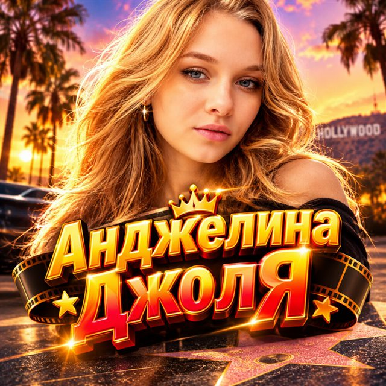
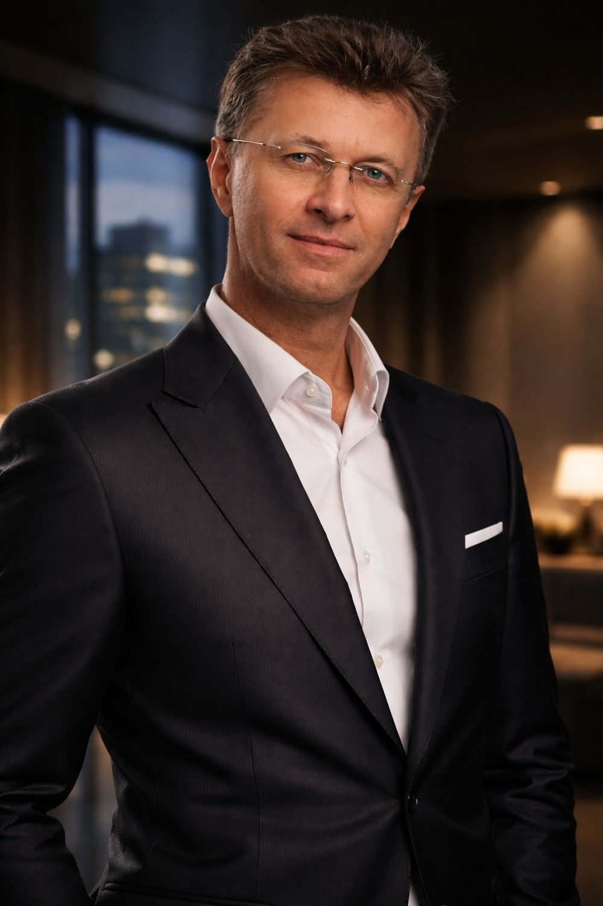
Певец, композитор и продюсер. Тридцать шесть лет на профессиональной сцене – от джазовых фестивалей и круизных контрактов до Кремлёвского концертного зала и сцены Международного Дома музыки.
Слушать песни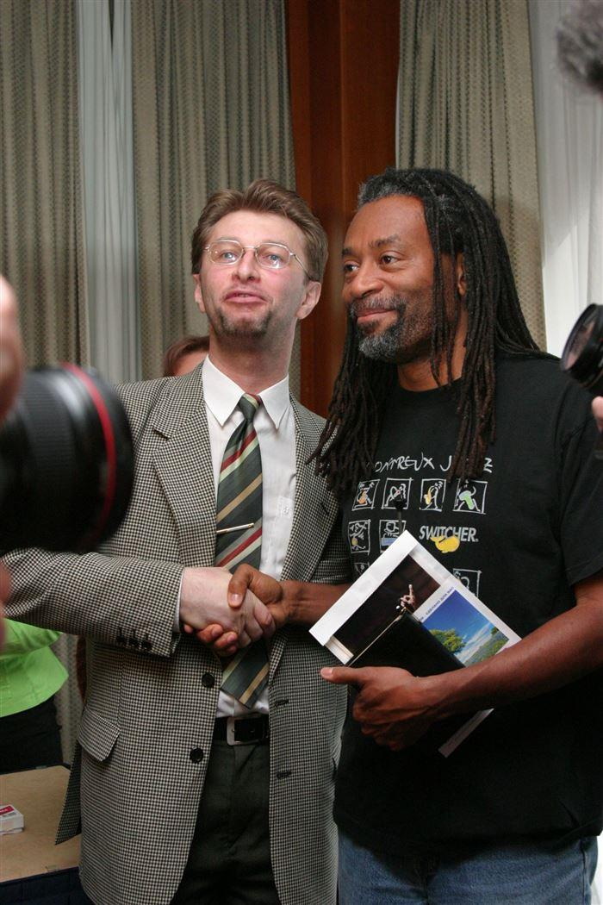
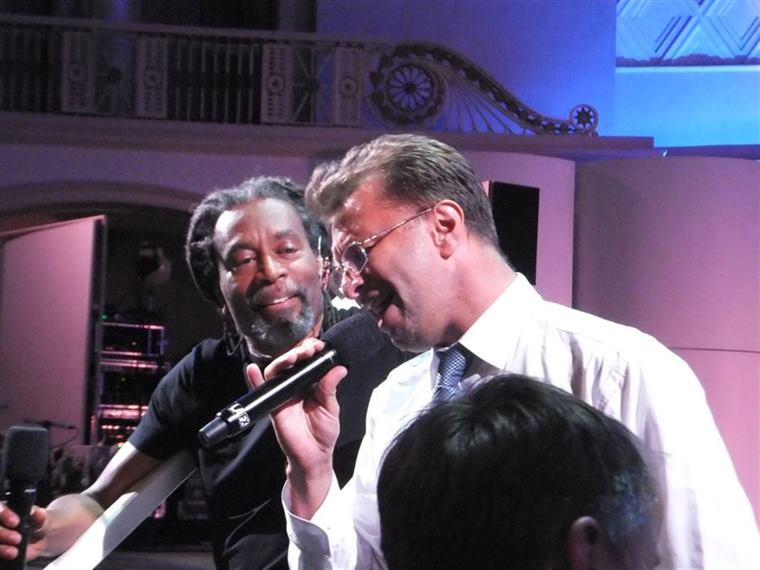
Авторские песни Андрея Ковалева – на Яндекс Музыке, VK Музыке и других площадках.

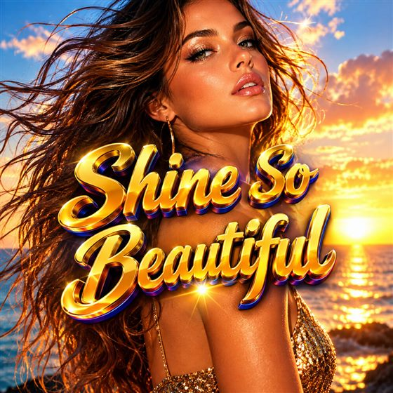
Новая песня. Музыка и исполнение – Андрей Ковалев, слова – Андрей Макаренко.
Слушать на всех площадках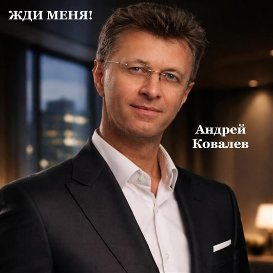
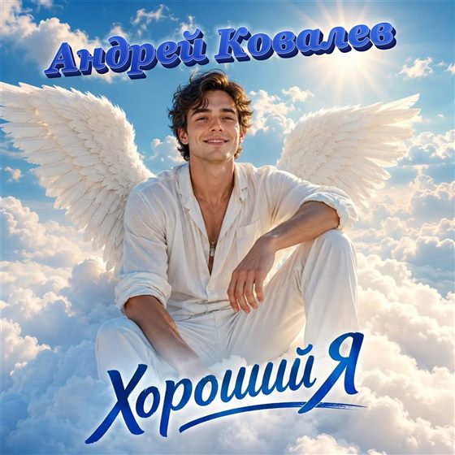
Один человек – целый оркестр.
Андрей Ковалев исполняет в собственном оригинальном жанре – JAZZ – eccentric – instrument – MAN. Его выступление это шоу звуков, в котором зал становится частью музыки: голосом имитируются ударные, бас-гитара и тромбон, а несколько партий звучат одновременно.
Композиции строятся а-каппельно, на слоговом пении и живых инструментах с характерным тембром. Музыкальный провокатор – в лучшем смысле слова: никто в зале не остаётся просто слушателем.
От Эстонского джазового оркестра до собственных концертных программ и продюсерской работы.
Работа в оркестре, выступления в составе «Нарвского диксиленда» – Нарва, Таллин.
Санкт-Петербургский оркестр, легендарный состав. Выступления на семи международных джазовых фестивалях.
Дирижёр эстрадно-джазового оркестра, преподаватель эстрадно-джазового вокала.
Вокалист по контрактам с зарубежными компаниями:
Рестораны и музыкальные клубы Новой Зеландии, Германии, Франции.
Солист и руководитель ансамбля композитора, лауреата «Песни года» Владимира Полякова.
Концертирующий певец и ведущий мероприятий. Организация праздничных программ, выставок, конференций и концертов в клубах, ресторанах, арт-центрах и event-агентствах.
Совместные выступления и импровизации со звёздами мировой и российской сцены.
Сольные программы Гильдии артистов эстрады – сольно, с ансамблем или с оркестром.
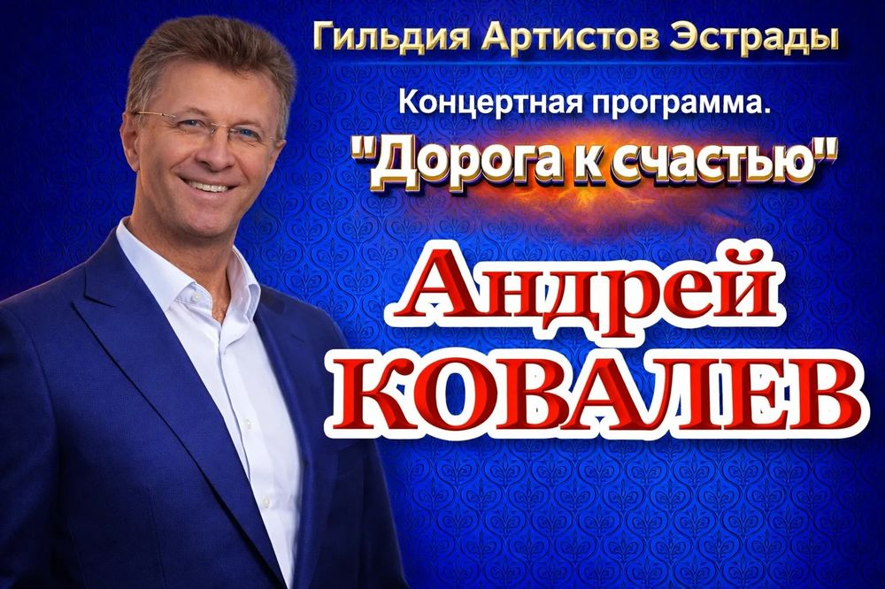
Концертная программа с песнями о главном – лирика, джазовая свобода и живой контакт с залом.
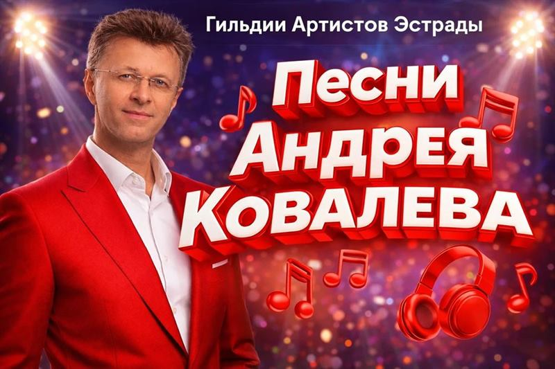
Авторская программа: собственные композиции разных лет в концертных аранжировках.
Арт-программы, права на которые принадлежат артисту. Все три реализованы.
Международный проект. Андрей представил его на приёме у Президента России, проект направлен на рассмотрение в Министерство культуры РФ.
Интерактивная программа, где зритель выходит на сцену и поёт вместе с артистом.
Патриотическая концертная программа для больших площадок и государственных событий.
Москва · Санкт-Петербург · Нижний Новгород · Брянск · Таллин · Нарва · Баден-Баден · Окленд
Артистическая деятельность отмечена правительственными письмами с одобрением от:
Нажмите на документ, чтобы рассмотреть его.
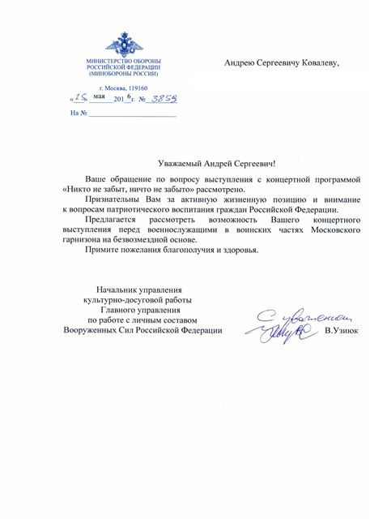
Министерство обороны РФ · 2016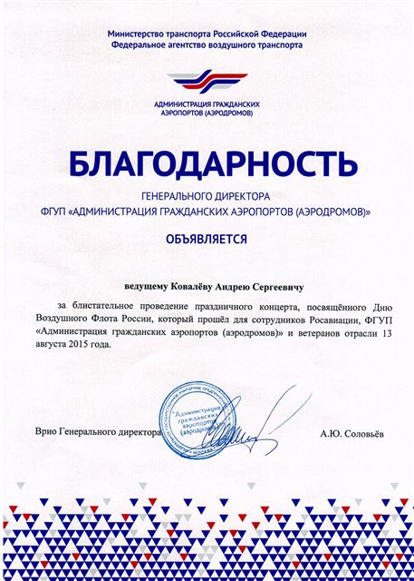
Росавиация, ФГУП «Администрация гражданских аэропортов» · 2015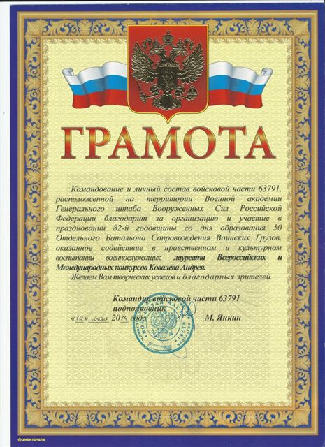
Войсковая часть 63791, Военная академия Генштаба ВС РФ · 2014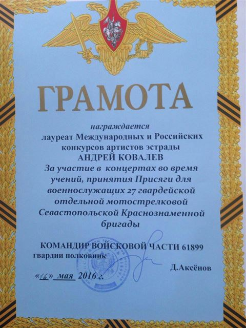
27-я гвардейская Севастопольская Краснознамённая бригада · 2016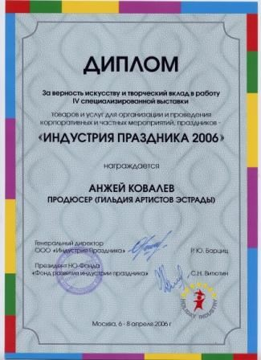
Выставка «Индустрия праздника» · 2006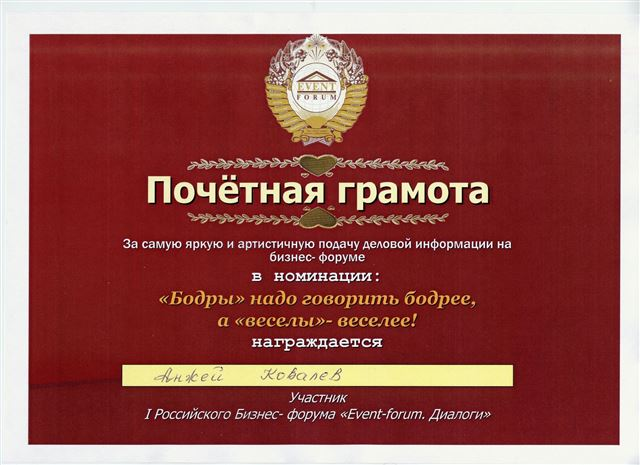
Бизнес-форум «Event-forum. Диалоги»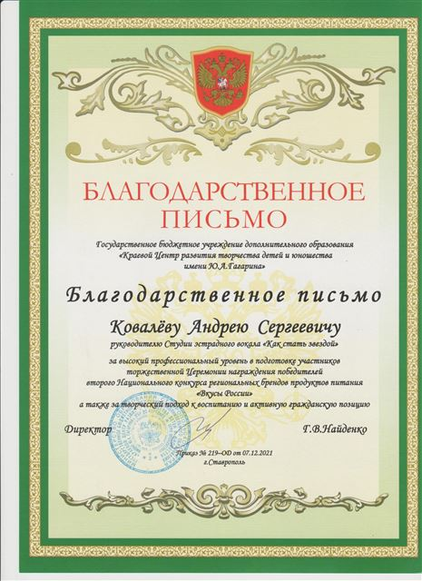
Краевой центр творчества детей и юношества им. Ю. А. Гагарина · 2021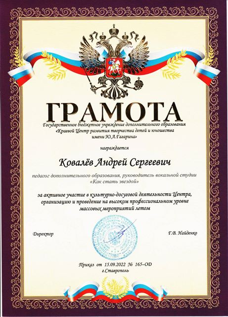
Краевой центр им. Ю. А. Гагарина · 2022